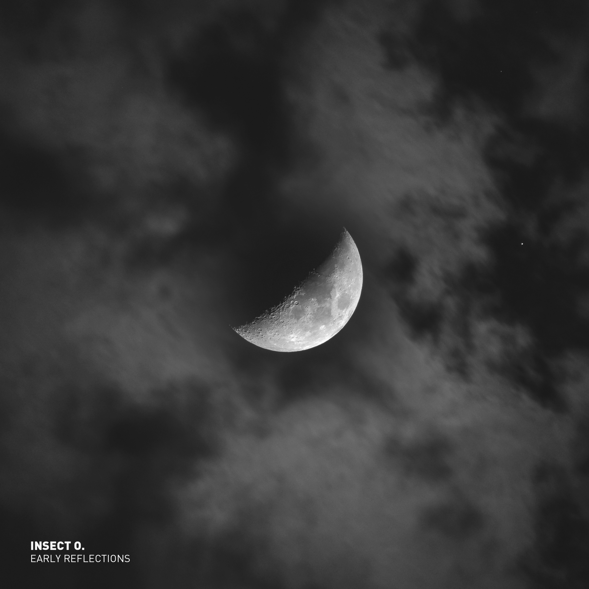

Insect O. Early Reflections

With Early Reflections, Oliver Hartmann opens the archives of his early work. The LP brings together eight techno tracks recorded under his moniker Insect O. between 2000 and 2003. The recordings reveal an artist searching for his musical language – a language that begins to draw on various elements: the melancholy of dub techno, hypnotic effect of repetitive sounds and minimalist structures of techno.
Listen
This is a placeholder for the web audio player generated by javascript.
On Early Reflections, Insect O. built a sonic world using two key machines: the Access Virus A and the Novation Drumstation. This video explores how those two pieces of hardware shaped the emotional depth and mechanical pulse of the LP — from evolving Virus pads and saturated basslines to sharp 909-style drums programmed on the Drumstation. By limiting the setup to a focused hardware workflow, Insect O. crafted a cohesive, raw sound that defines Early Reflections.
On a quiet Sunday in January, Dresden was wrapped in snow. Ice drifted slowly across the Elbe as the sun set behind the city. I grabbed my camera and captured the peaceful mood of that moment — cold air, warm light, complete calm. This mood perfectly mirrors my track Sunday Afternoon, the closing piece of my album Early Reflections.